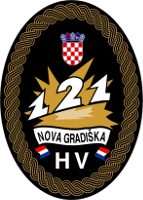
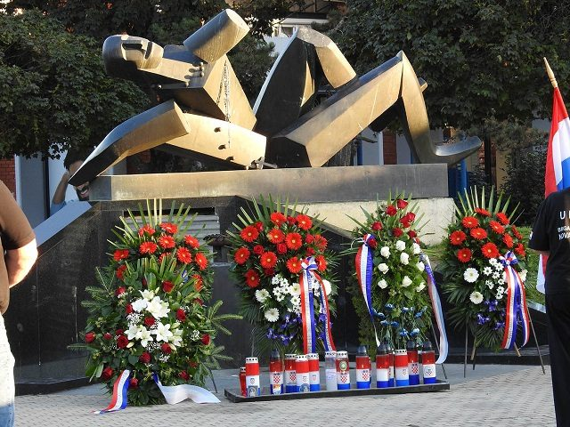

Strateška uloga, obrana grada i put prema slobodi zapadne Slavonije
Geostrateški položaj i značaj Nove Gradiške na početku sukoba
Tijekom Domovinskog rata, Nova Gradiška imala je važnu geostratešku ulogu u obrani Hrvatske. Smještena uz autocestu Zagreb-Lipovac i glavnu željezničku prugu, predstavljala je važnu prepreku neprijateljskim snagama koje su nastojale presjeći zapadnu Slavoniju i nastaviti napredovanje prema Zagrebu.
Već u ljeto 1991. godine stanje na novogradiškom području postajalo je sve teže. Grad se našao pod napadima snaga JNA iz smjera Okučana i Stare Gradiške, koje su raspolagale tenkovima, topništvom i zrakoplovstvom. Hrvatska obrana tada se tek organizirala, oslanjajući se uglavnom na policiju i prve dragovoljce.
Organizacija otpora i osnivanje legendarne 121. brigade
Tijekom kolovoza 1991. godine pobunjeničke snage blokirale su važne cestovne i željezničke pravce te započele napade na hrvatska sela. Ključan događaj u organizaciji obrane bilo je ustrojavanje 121. brigade Zbora narodne garde (ZNG) krajem rujna 1991. godine. Brigada, poznata kao "Ponos Nove Gradiške", okupila je brojne domaće dragovoljce i branitelje.
Pripadnici 121. brigade preuzeli su obranu duge i zahtjevne bojišnice. Unatoč nedostatku teškog naoružanja, uspjeli su organizirati obranu grada i spriječiti neprijateljsko napredovanje. Važnu ulogu imali su i pripadnici policije, Posebne jedinice policije te dragovoljci iz drugih dijelova Hrvatske.

Udruga hrvatskih branjitelja Domovinskog rata 121. brigade
Crna subota – Zračni napad 21. rujna 1991. godine
Subota, 21. rujna 1991. godine, ostala je zapamćena kao jedan od najtežih dana u povijesti Nove Gradiške. U 12 sati i 52 minute zrakoplovi JNA napali su središte grada, pri čemu su pogođeni brojni civilni i javni objekti.
Među pogođenim objektima bili su Dom kulture, zgrada općine, pošta, pravoslavna crkva i željeznički kolodvor, gdje je pogođen putnički vlak s civilima. U napadu je poginulo 11 osoba, među kojima su bili civili, željeznički radnici i branitelji, dok je više od pedeset ljudi ranjeno. Unatoč razaranju, građani i branitelji nisu odustali od obrane grada.
Bitka za Gorice i definitivna obrana grada
Tijekom listopada 1991. godine neprijateljske snage pokrenule su veliku oklopno-pješačku ofenzivu s ciljem ulaska u Novu Gradišku. Najteže borbe vodile su se u prigradskom naselju Gorice, važnom položaju za obranu prilaza gradu.
Hrvatski branitelji pružili su snažan otpor, a 6. listopada 1991. neprijateljski napad kod Gorica bio je odbijen. Time je spriječen izravan ulazak neprijateljskih snaga u grad. Nakon toga neprijatelj je nastavio s topničkim napadima i razaranjima koja su trajala mjesecima.
Oslobodilačke akcije: Od Širinaca do operacije "Bljesak"
Nakon stabilizacije obrambenih položaja, hrvatske snage započele su napadna djelovanja. Jedna od najvažnijih akcija bila je Akcija Širinci, pokrenuta krajem prosinca 1991. i završena početkom siječnja 1992. godine. Tijekom akcije oslobođeno je selo Širinci i okolni važni položaji, čime je smanjen neprijateljski pritisak na Novu Gradišku.
Nakon Sarajevskog primirja 3. siječnja 1992. godine, na bojišnicu su stigle mirovne snage UN-a. Ipak, dio novogradiškog područja ostao je okupiran sve do vojno-redarstvene operacije Bljesak, pokrenute 1. svibnja 1995. godine. U manje od 40 sati hrvatske snage oslobodile su zapadnu Slavoniju, uključujući Okučane i Staru Gradišku.
Kronološki pregled ključnih događaja i ratnih prekretnica
Najvažniji događaji na novogradiškom području tijekom Domovinskog rata:
- Kolovoz 1991. godine – Početak otvorenih oružanih sukoba, postavljanje barikada i napadi na okolna hrvatska mjesta.
- Rujan 1991. godine – Ustrojavanje 121. brigade HV-a i organizacija obrambenih linija.
- 21. rujna 1991. (Crna subota) – Zračni napad JNA na središte grada, u kojem je poginulo 11 osoba, a više od pedeset ih je ranjeno.
- 6. listopada 1991. – Odbijen neprijateljski napad kod Gorica i obranjena Nova Gradiška.
- Prosinac 1991. – Siječanj 1992. – Akcija Širinci, tijekom koje su oslobođeni važni položaji i selo Širinci.
- 3. siječnja 1992. godine – Sarajevsko primirje i dolazak mirovnih snaga UN-a.
- 1. – 2. svibnja 1995. godine – Operacija "Bljesak" i oslobađanje zapadne Slavonije.
Povijesno naslijeđe, žrtve i sjećanje na heroje
Cijena slobode koju su građani i branitelji Nove Gradiške platili tijekom Domovinskog rata bila je velika. Grad i okolna sela pretrpjeli su brojna granatiranja i razaranja, a mnogi branitelji izgubili su živote ili bili teško ranjeni. Njihova žrtva i danas se čuva kroz spomen-obilježja i obilježavanje važnih obljetnica.
Nova Gradiška s ponosom čuva uspomenu na svoje branitelje i sve koji su sudjelovali u obrani grada. Važno je da mlađe generacije uče o događajima iz 1991. i 1995. godine kako bi se sačuvalo sjećanje na hrabrost i žrtvu ljudi koji su se borili za slobodu Hrvatske.
